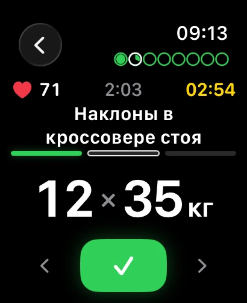
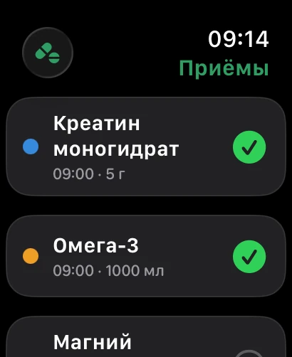

01 / ПланируйТренировка начинается
Тренировка начинается
с ясного плана.
Собери упражнения в шаблон и возвращайся к нему, когда придёшь в зал. Календарь и история помогут держать свой ритм.
STRONGARY · ДЛЯ IPHONE И APPLE WATCH
Тренируйся. Заботься о себе. Замечай прогресс.
Всё, что помогает продолжать, — в одном приложении.
С каждым подходом
ближе к себе.
Забота о себе.
Часть твоего дня.
Не каждый день — новый рекорд.
Но каждый день — часть твоего пути.
Strongary помогает его увидеть.
01 ТРЕНИРОВКИ
От первого плана до нового личного рекорда.
Дневник, который всегда на твоей стороне.
Собери упражнения в шаблон и возвращайся к нему, когда придёшь в зал. Календарь и история помогут держать свой ритм.
Записывай вес и повторения, отмечай выполненные подходы. История упражнения рядом — ты знаешь, от чего оттолкнуться сегодня.
Одна тренировка — часть большой картины. Следи за динамикой рабочего веса, объёмом нагрузки и личными рекордами.
МОТИВАЦИЯ В ТВОИХ РЕЗУЛЬТАТАХ
Регулярность, нагрузка по мышцам, изменение веса. Когда видишь свой путь, легче сделать следующий шаг.
Рассмотреть результаты02 ПРИЁМЫ
Препараты, витамины и добавки.
Свой порядок — даже в насыщенный день.
Всё по порядку.
С утра до вечера.
Маленькие отметки.
Целая история.
Составь расписание приёмов по времени. На сегодня — понятный список перед глазами.
Напоминания помогают вернуться к плану. Отмечай приём на iPhone или Apple Watch.
История и статистика показывают, как получается следовать выбранному расписанию.
STRONGARY НА APPLE WATCH
Отметить подход. Проверить пульс.
Записать приём. Не отвлекаясь на телефон.


ПАРА ДЕТАЛЕЙ
Мы готовимся к открытому тестированию. Когда оно начнётся, здесь появится ссылка для установки через TestFlight.
Выбирай то, что нужно тебе. Можно вести дневник тренировок, отмечать приёмы или использовать оба направления.
Основной дневник работает на iPhone. Apple Watch дополняют его: можно отмечать подходы и приёмы прямо на запястье.
Это реальные экраны Strongary на этапе разработки. Мы продолжаем улучшать приложение, поэтому к выпуску некоторые детали могут измениться.
ТВОЙ СЛЕДУЮЩИЙ ШАГ
Strongary для iPhone и Apple Watch.
Скоро — в открытом тестировании.
Ссылка на установку появится здесь.